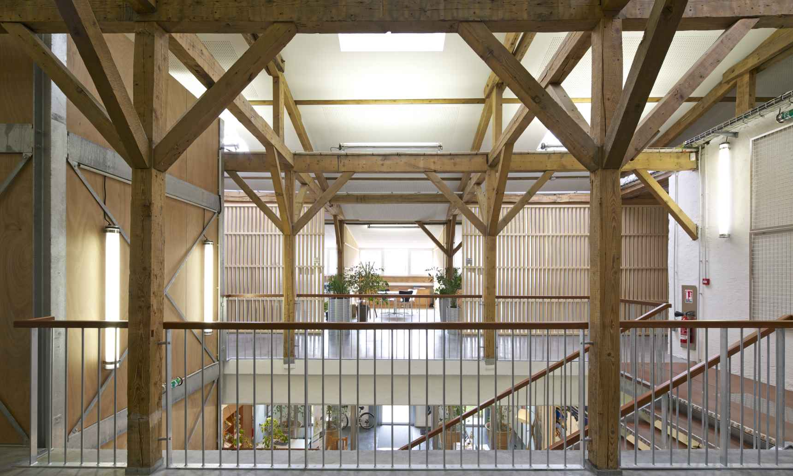

Survolez l'image et agrandissez/réduisez la vue à l'aide de la molette.
Budget: 2 515 000 € HT
Surface utile: 2 560 m2 : ADUAN 1 680 m2, Université 350 m2 et locaux d'activités 530 m2
Date début: 2009
Date fin: 2013
Maîtrise d'ouvrage: SOLOREM
Co-traitant(s): bureau des paysages
Description:
Pourquoi le patrimoine du quotidien ne pourrait-il pas être revalorisé au même titre que le patrimoine dit exceptionnel ? Pour ses
nouveaux locaux, nous avons suggéré à l’Agence de Développement et d'Urbanisme de l'Aire urbaine Nancéienne (ADUAN)
d’investir le bâtiment des anciennes écuries sur le site du marché aux bestiaux. C’est un des rares édifices anciens d’un quartier en
pleine mutation, les Rives de Meurthe. Dans le périmètre de la ZAC Austrasie entre la Grande Halle et le Bras Vert se développe
notamment le projet “Technopôle Renaissance, un pôle d’excellence de génie urbain”.
Le bâtiment des écuries, d’apparence homogène, a été réalisé en deux temps, en 1910 puis en 1930. Sa toiture, constituée de
tuiles en partie basse et d’inox en partie haute, a été refaite après l’année 1976. Son volume intérieur offre de nombreuses
possibilités d’aménagement : une hauteur sous dalle de 4.5 m au rez-de-chaussée, 6 travées d’une portée de 9,5 m sans poteaux
intermédiaires ; à l’étage une belle charpente en bois d’environ 5 m de hauteur au faîtage. Les besoins exprimés par l’ADUAN
étant plus modestes que la capacité du bâtiment, les deux travées centrales du rez-de-chaussée et tout l’étage lui sont dévoués.
Les deux travées sud sont occupées par des espaces d’activités indépendantes pouvant recevoir du public et les deux travées
nord sont équipées pour l’Université de Lorraine (Lorraine Fab Living Lab). Dans le respect des principes du développement durable,
peu de démolitions sont nécessaires : les maçonneries, sols, structure, et charpente bois sont maintenus et mis en valeur autant
que possible. La création de circulations verticales, de deux escaliers, d’un ascenseur, mais aussi de nouvelles baies vitrées
s’adaptent à l’ordonnancement de l’existant. Au rez-de-chaussée, des ouvertures sont créées entre certaines travées pour les relier
et également en façade pour éclairer davantage les locaux. A l’étage, un bandeau périphérique de fenêtres permet d’installer des
bureaux dans l’ancien grenier à foin. Les reprises sont ponctuelles et les matériaux des ouvrages neufs sont choisis en fonction de
critères de bonne durabilité, de confort et d’entretien minimum.
{kind=link}
{kind=link}
{kind=link}
{kind=link}